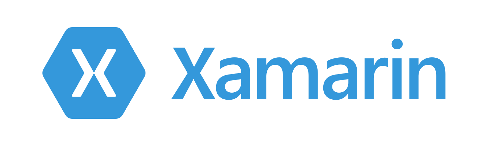

Esta é a grande dúvida entre os desenvolvedores, recentemente desenvolvi alguns aplicativos e optei por um framework para aplicações híbridas devido a praticidade e o know-how. Para um desenvolvedor JavaScript que conhece o Angular, com certeza o Ionic é a melhor escolha, pois maximiza a produtividade e o tempo neste cenário.
Existem duas considerações, ao seguir pela abordagem de aplicações híbridas, podemos afirmar que um aplicativo nativo ganha nos quesitos performance e a experiência do usuário. Porém a perda de performance é mínima dependendo da aplicação e os recursos que estão envolvidos (Câmera, Agenda, GPS, Push Notifications, Sincronização de Contas), talvez não haja perda na experiência do usuário.
Híbridos
Assim como web-sites aplicativos híbridos são a combinação de três tecnologias HTML, CSS e JavaScript. A principal diferença é que os aplicativos híbridos são publicados de maneira local, utilizando a plataforma WebView.
Você provavelmente já instalou algum aplicativo híbrido disponível nas lojas Google Play e Apple Store. Com inúmeros recursos disponíveis os aplicativos híbridos podem acessar quase todos os recursos disponíveis no mobile de maneira efetiva.
Lembrando que a primeira versão do Facebook era híbrida e posteriormente foi migrada por questões frequentes já debatidas veja mais.
Cordova
Grande parte dos aplicativos Android e iOS foram desenvolvidos no Apache Cordova, uma plataforma que provê uma API Javascript que possibilita acessar recursos do dispositivo através de plugins que foram escritos de forma nativa.
Phonegap
Digamos que foi o precursor do Apache Cordova, após a aquisição do PhoneGap por parte da Adobe, foi criado o projeto open-source chamado Apache Cordova, baseado no PhoneGap. Atualmente após a separação o PhoneGap trata-se de uma plataforma completa, que provê recursos como PhoneGap Build que possibilita o build remoto, sendo assim você não precisa investir em um Mac para distribuir sua aplicação iOS.
Ionic
Ok eu sou suspeito para falar desse framework, os dois apps que publiquei na Google Play foram feitos em Ionic 2. O Ionic é um framework criado no topo do Cordova que facilita a criação de apps e progressive web-apps. Pense no Ionic como um framework frontend completo, que utiliza o Angular e simplifica o trabalho provendo interface (CSS/SASS) e componentes com interação do usuário. Além disse existem outros produtos pagos para auxiliar no desenvolvimento veja mais.
Existem duas versões do Ionic, a primeira versão é utiliza no Angular 1x, já a segunda usa o Angular 2x, então esteja preparado para o mundo TypeScript.
Se você tem interesse em desenvolver aplicativos em Ionic, creio o Ionic 2 seja o melhor caminho vá direto para o Angular 2 e seja feliz.
XDK

Baseado no cordova o Intel XDK é uma solução para criação de apps, disponibiliza uma IDE completa e integrada com o editor Adobe Brackets, com os recursos de App Preview, Build Remoto, entre outros.
O XDK possui uma API e Javascript e plugins, mas também permite a integração com plugins cordova.
Tive a experiência de criar aplicativos no XDK antes de conhecer o Ionic, usei o Angular 1x na época e o grande diferencial era o build remoto que agiliza questões de configuração do Android SDK.
Nativo
Não há limites para aplicações nativas, já que tem uma melhor performance, fornecem uma melhor experiência para o usuário e são desenvolvidos com elementos e ações nativas, tornando a experiência do usuário próxima ao padrão de aplicativos disponíveis nas plataformas que eles utilizam.
Native Script
É um framework criado pela Telerik com a seguinte abordagem crie sua aplicação nativa com Angular, JavaScript ou TypeScript. O diferencial do Native Script é que a interface é construída com base nos elementos de interface nativos de cada plataforma, é possível ter uma view para Android e outra para o iOS e de quebra a reutilização de código.
Criei um aplicativo no estilo hello-world e resultado foi além do esperado, a performance da aplicação foi superior ao ionic, porém na questão desenvolvimento, desenvolver sem emulador é impossível, algo que é possível no Ionic.
React Native
A abordagem do React Native é reutilização de código, como seu próprio nome diz React, o desenvolvimento é baseado no famoso framework web criado pelo Facebook React. Utiliza para representação visual os próprios elementos de cada plataforma. Um dos princípios é Não perca tempo recompilando, ou seja a cada modificação de código, sua aplicação é instantaneamente recompilada, este é um conceito também utilizado no Ionic. Outro conceito importante é a possibilidade de utilizar código nativo, isso expande os limites do React Native.
Apesar de já ter criado aplicações com Electron + React, nunca me aventurei em criar uma aplicação em React Native, ok está na minha lista de próximos frameworks a utilizar em futuros apps.
Xamarin

É um framework Microsoft que possibilita criar aplicações nativas utilizando as linguagem C# ou F#. A utilização das linguagens são possíveis devido ao framework Mono que tornou o .NET cross-platform.
Durante alguns labs os emuladores rodando no Hyper-V tiveram uma performance superior ao Virtual Box, acho que deve ser pelo nível de emulação do Hyper-V, não tenho certeza.
Nativo na veia
Claro que o poder total deve estar em desenvolver aplicativos diretamente no Android Studio ou xCode, sendo que você pode reaproveitar bibliotecas escritas na linguagem nativa de cada plataforma, mas lembre-se você terá dois desenvolvimentos, dois projetos para manter, boas práticas são bem vindas neste cenário.
Minha experiência
Criei duas aplicações híbridas que estão disponíveis na Play Store, segue ai o meu Jabá.
SP Trilhos
Criei recentemente esta aplicação para ajudar os paulistanos a receber informações atualizadas do status do Metrô e CPTM.
What's Size
Esta aplicação auxilia você viajante/mochileiro que deseja saber suas medidas de roupas na Europa e Estados Unidos.
O aplicativo é totalmente offline.
Escolheu seu framework
N frameworks foram apresentados, alguns foram esquecidos e provavelmente hoje algum foi criado ou estão criando e daqui 2 semanas todos estes serão obsoletos, sacanagem rs.